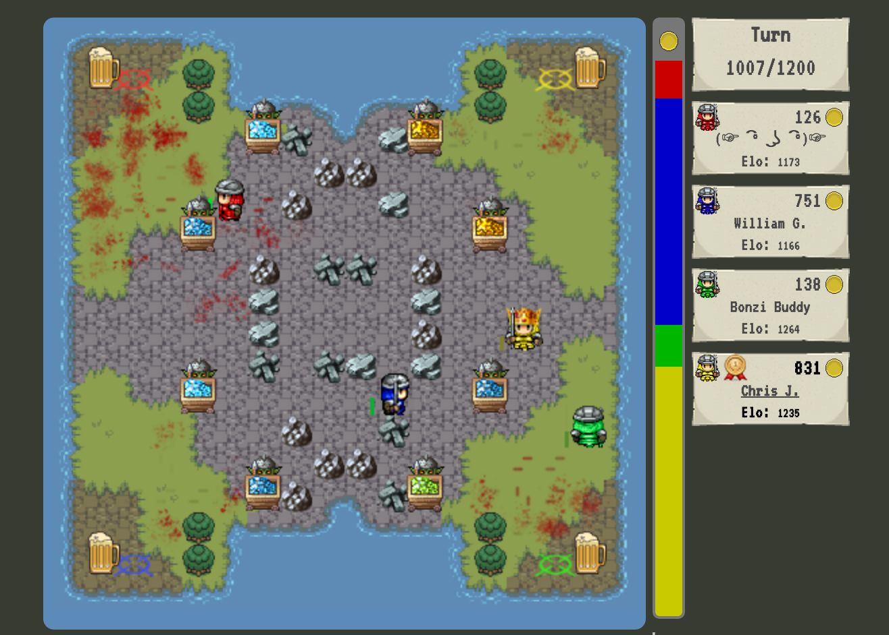
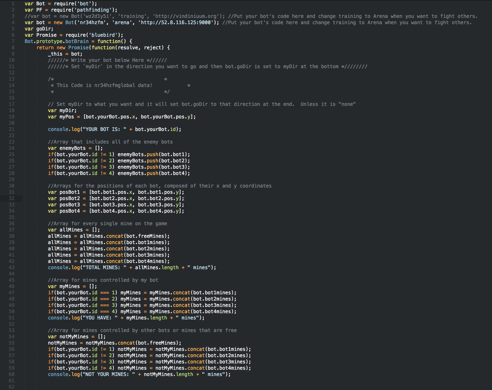
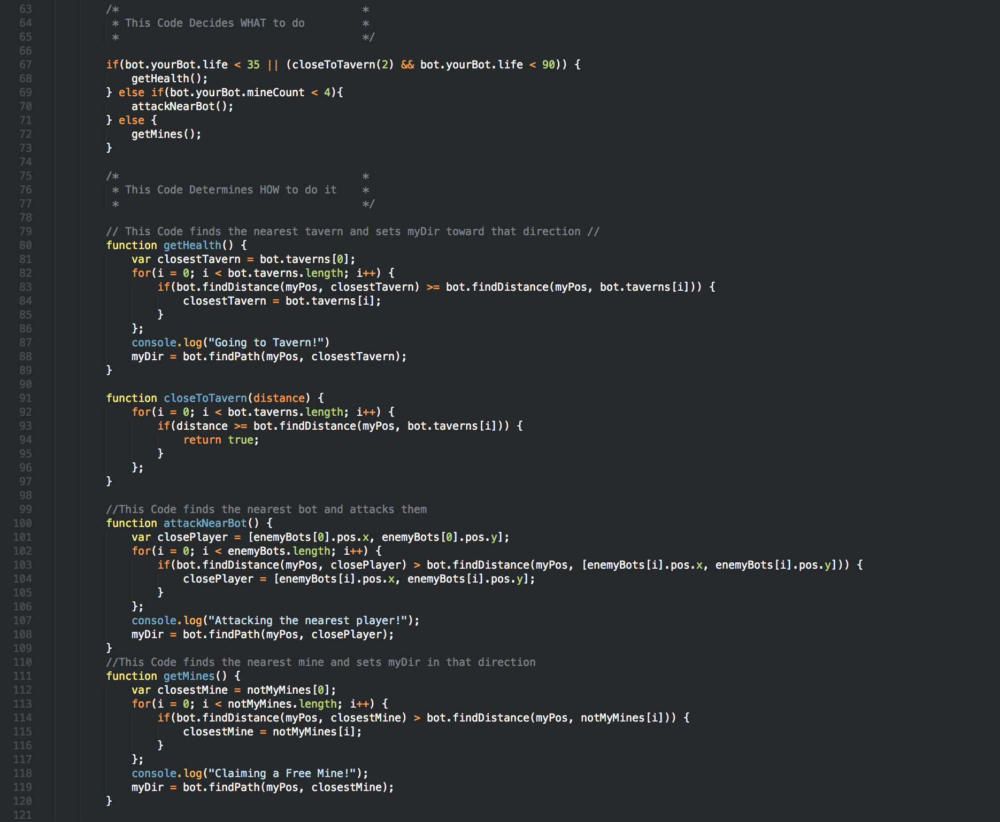
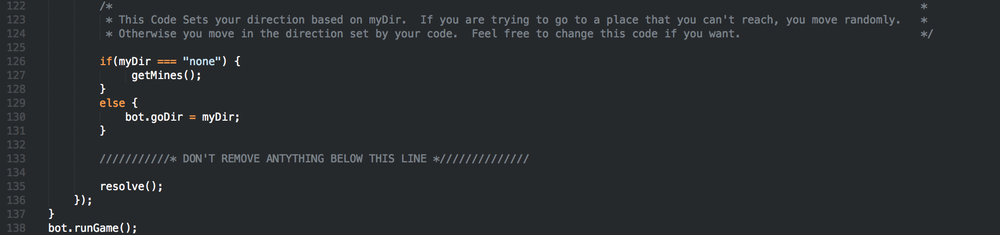

Artificial Intelligence is an area of computer science that deals with giving machines the ability to seem like they have human intelligence. In 1950 a man named Allen Turing developed a test in that checks to see if a machine can think like humans. In order to do this they must consider emotions, internal motivations, beliefs, passions, desiers, intentions, boredom, etc. when making decisions. The test is simple: a human interrogator is isolated and given the task of distinguishing between a human and a computer based on their replies to questions that the interrogator poses. After a series of tests are performed, the interrogator attempts to determine which subject is human and which is an artificial intelligence. The computer's success at thinking can be quantified by its probability of being misidentified as the human subject.
Vindinium AI Challenge
Vindinium is an Artificial Intelligence programming challenge. You have to take the control of a legendary hero using the programming language of your choice. You will fight with other AI for a predetermined number of turns and the hero with the greatest amount of gold will win.
In each Vindinium game there are four bots. The bots compete to claim mines in order to increase gold production, at the end of the game (which consists of 1,200 turns) the bot with the most gold wins. Every bot has 100 health, every turn they lose 1 health, and every time they claim a mine they lose 20 health. Bots can also lose 20 health if an enemy bot attacks them. Bots can regain health by going to one of the multiple taverns on the map. They can buy a drink at the tavern which cost two gold and gives the bot 50 health. There are several differnt things one wants to keep in mind when creating a bot; Should the bot be passive? Shoud it be agressive? When should it get health? When should it claim a mine? When should it attack another bot?
 This is what a standard game in the Vindinium arena looks like.
My Bot
I created a pretty simple bot. It have three different actions that the bot will do throughout the game. First I made my bot prioritize getting health first before doing anything else. It can only excute the other two tasks if it has more than 35 out of 100 health. Next my bot checks to see if it has less than four mines. If this is true then my bot will find the nearest enemy bot and attack it. Otherwise if my bot has more than 35 health and has more than 4 mines than it will claim the nearest mines.
My Code


